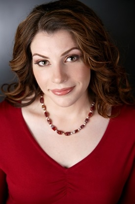
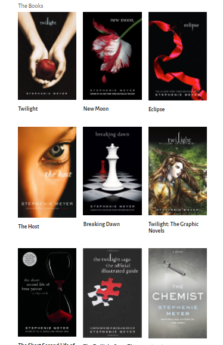

Stephenie Meyer (Morgan de nacimiento) nació en Connecticut el 24 de diciembre de 1973 siendo hija de Stephen y Candy Morgan. Su familia se trasladó a Phoenix (Arizona) cuando ella tenía cuatro años, y allí creció junto a sus cinco hermanos: Seth, Emily, Jacob, Paul, y Heidi. Su particular nombre ('Stephenie' en vez de 'Stephanie') viene del nombre de su padre, que se llamaba Stephen y decidió añadirle las letras "ie" para hacerlo un nombre de chica. Meyer asistió a la escuela secundaria Chaparral de Scottsdale, Arizona. Durante el tiempo que estudió allí, fue galardonada con el premio Nacional al Mérito Escolar, que usó para pagar su ingreso en la universidad Brigham Young, en Utah, donde se recibió de Licenciada en Filología Inglesa en 1997. Su familia y ella pertenecen a La Iglesia de Jesucristo de los Santos de los Últimos Días desde muchos años atrás. Stephenie ha indicado que es muy puritana acerca de sus creencias por lo cual no bebe alcohol y no fuma.
| precio | tipo |
|---|---|
| 35 | amanecer |
| 50 | eclipse |
| 40 | luna nueva |
Meyer dice que la idea para Crepúsculo llegó a ella en un sueño el 2 de junio de 2003. El sueño era sobre una chica humana y un vampiro que estaba enamorado de ella pero tenía sed de sangre. Con base en este sueño, Meyer escribió el primer borrador de lo que sería el capítulo 13 del libro. En cuestión de tres meses había transformado su sueño en una novela completa, aunque ella dice que no tenía la intención de publicar Crepúsculo y la escritura es para su propio disfrute. La respuesta de su hermana con el libro era entusiasta y convenció a Meyer para enviar el manuscrito a las agencias literarias. De las quince cartas que escribió, cinco quedaron sin respuesta, nueve fueron rechazos, y la última fue una respuesta positiva por parte de Jodi Reamer de Writers House. Ocho editores compitieron por los derechos para publicar Crepúsculo en una subasta en 2003. En noviembre, Meyer había firmado por $750 000 por las tres primeras entregas de la Saga con Little, Brown and Company. Crepúsculo fue publicado en 2005 con setenta y cinco mil ejemplares en su primera edición. Alcanzó el número cinco en la lista de superventas del New York Times en la categoría Libros de capítulo para niños, dentro de un mes de su lanzamiento, y más tarde subió al uno. Los derechos al exterior se vendieron a más de veintiséis países. La novela fue nombrada por Publishers Weekly como "El Libro del Año" y fue seleccionado por el editor del New York Times.
La prosa de Stephenie Meyer deja mucho que desear. Sin embargo, la Saga de Crepúsculo ha cautivado a los lectores de todo el mundo y se ha convertido en un fenómeno literario. El primer libro de la serie, presenta a la heroína Bella Swan y su novio vampiro Edward Cullen. Su amor prohibido conduce la trama de la novela, que culmina con Bella pidiéndole a Edward que la convierta en un vampiro para que puedan estar juntos para siempre. Tiene dos escenarios principales: el soleado Phoenix, Arizona y el nublado Forks, Washington, dos ciudades que no podrían ser más diferentes. La pequeña ciudad de Forks es fría y lluviosa, y los amigos de Bella deben ir a Port Angels para buscar vestidos para bailar. Meyer contrasta las dos configuraciones, enfatizando la dificultad que Bella tiene para adaptarse a su nuevo entorno. Muchos lectores han criticado a Bella Swan por ser un modelo débil e ingenuo para las mujeres jóvenes que componen la base de admiradores de la saga. Bella se siente atraída por Edward, experimentando una especie de magnetismo animal que es difícil de resistir, y con frecuencia está en peligro, actuando como una damisela en apuros para el héroe Edward. Los personajes femeninos son en gran medida impotentes y poco desarrollados.
Meyer comenzó su propia compañía de producción en 2011 con el productor Meghan Hibbett. La compañía se llama Fickle Fish Films. En 2011, Stephenie ocupó gran parte del tiempo a la producción de las dos entregas de Amanecer, así como a la adaptación cinematográfica de la novela de Shannon Hale, Austenland que será dirigida por Jerusha Hess y protagonizada por Keri Russell, JJ Feild y Jennifer Coolidge, entre otros. En abril de 2012, Meyer anunció que estaría produciendo una adaptación cinematográfica de Down a Dark Hall, una novela escrita por Lois Duncan.